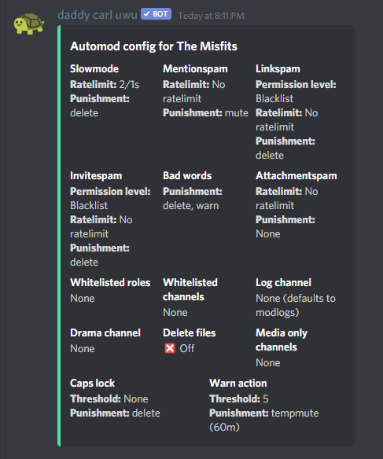

In light of recent events, we've created rules for the Misfits server.
You can find all of the rules below. We expect you to read these.
In the bot-commands channel, type -report (correct syntax - -report [user] [reason]) and report the user with the following format;
What was this user doing?
When was this user doing this?
If in DMs, can you provide a screenshot?
In the -mod command, it displays all commands you can use for punishment. You can also find these at Carl-Bot's Moderation Documents.
Should you have any questions, please shoot Awex a DM/ping.
All staff can see how we auto-mod content by running -automod
When finished reading these rules in place, please DM Awex with the following sentence:
I, [discord username], acknowledge these rules and will do as much as I can to follow them accordingly.